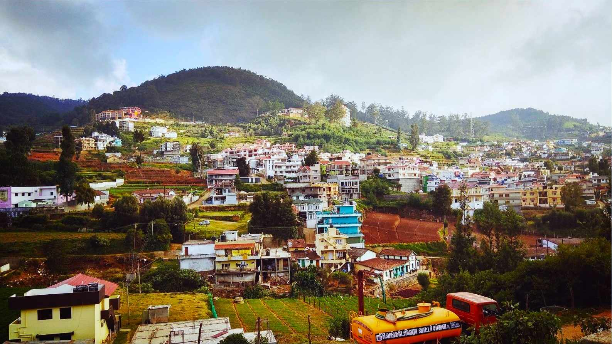
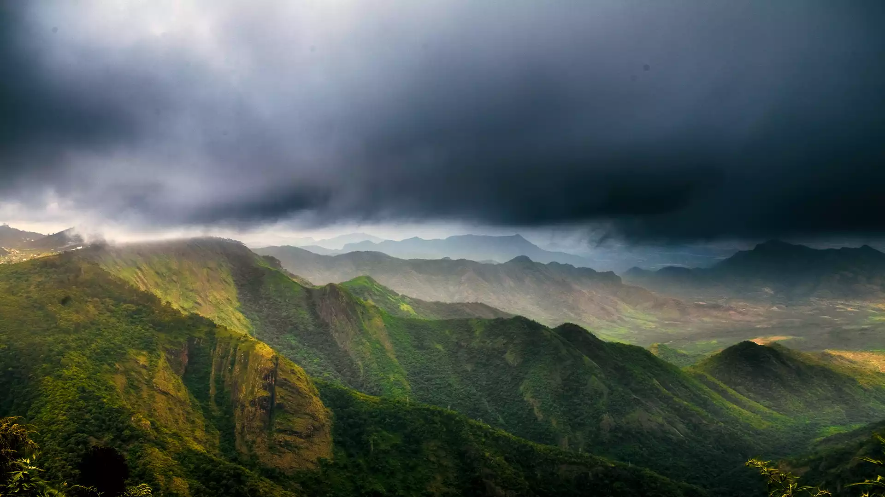
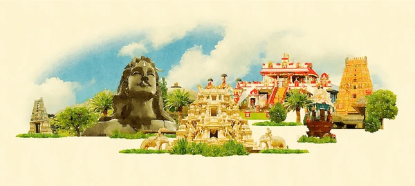
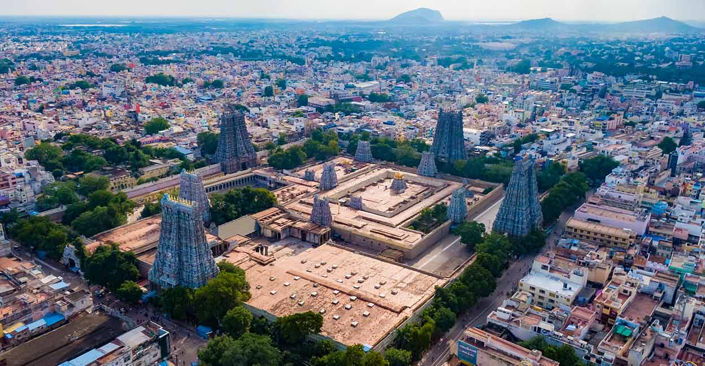
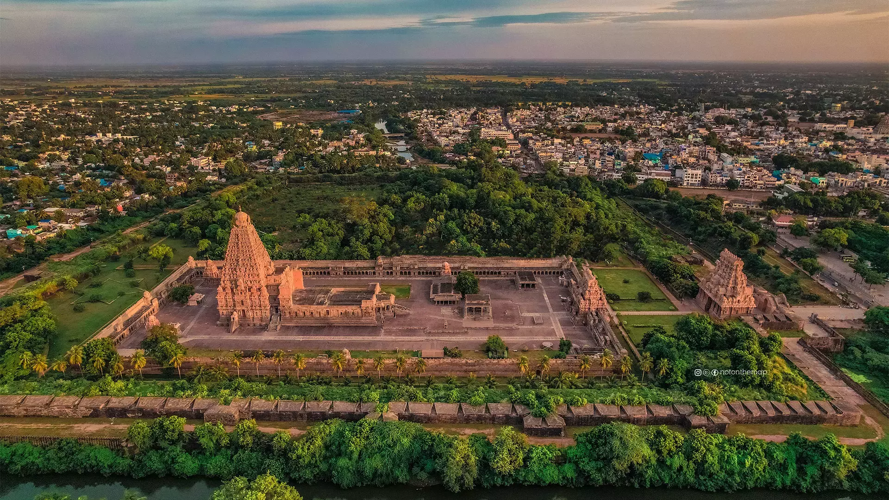

Ooty
Queen of hill stations with the toy train, botanical gardens and Ooty Lake.

Tamil Nadu offers two very different holidays in one state: cool Nilgiri hill stations wrapped in tea gardens, and towering temple towns that have hos…
Tamil Nadu offers two very different holidays in one state: cool Nilgiri hill stations wrapped in tea gardens, and towering temple towns that have hosted pilgrims for a thousand years. We plan routes that balance both without exhausting drives.
Queen of hill stations with the toy train, botanical gardens and Ooty Lake.
Misty Palani hills, Coaker's Walk, Pillar Rocks and the star-shaped lake.
Compact, uncrowded hill station in the Shevaroy hills near Salem.
Sim's Park, Dolphin's Nose and endless tea estate walks.
Wild, quiet plateau of tea estates with regular elephant and lion-tailed macaque sightings.
Meenakshi Amman Temple, the beating heart of Tamil temple architecture.
Ramanathaswamy Temple, Pamban bridge and the ghost town of Dhanushkodi.
India's southern tip where three seas meet, famous for sunrise and sunset.
Marina Beach, Kapaleeshwarar Temple, Mahabalipuram day trips and great food.
Easy weekend hill escape with paragliding, boating and Swamimalai trek.
Hill stations like Ooty, Kodaikanal and Yercaud are pleasant from March to June and again October to February. Temple circuits in Madurai, Rameswaram and Kanyakumari are most comfortable between November and February.




Planning questions answered by our travel desk.
Tell us your travel dates and group size. We will send a day-by-day plan with pricing on WhatsApp.
Call us for same-day availability, customised itineraries and honest pricing. No hidden charges, ever.